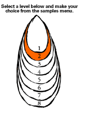
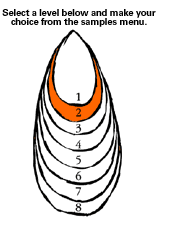

| accompaniment |
music played on an instrument that supports another performer; often a piano part or guitar chords |
| accuracy |
precision of a performance with respect to the music selected, whether from a written score or aural transcription |
| action song |
songs that are accompanied by gestures and actions |
| added note(s) |
note(s) added to a basic chord to add "colour" to the sound; jazz chords include added note(s) |
| amplify |
to make louder |
| answering pattern [phrase] |
second half of a pitched or rhythmic pattern that responds to that which precedes it (the question) |
| anthem |
a short celebratory vocal piece, often with words taken from the Bible, or a song of great social significance e.g., The New Zealand National Anthem "God of Nations", "We are the World" |
| balance |
the blend and positioning of voices, instruments, or other sounds in a musical work or performance |
| beat |
underlying pulse in most music; basic unit of timing or rhythm |
| blues |
a vocal form which originated in America; usually consists of 12 bars involving chords I, IV, and V7 |
| body percussion |
sounds made using parts of the body (e.g., foot stamping, thigh slapping) |
| bridge |
a section of music that links two others e.g., an instrumental bridge between a verse and chorus of a song |
| call and response |
a structural device that derives from the work songs of Afro-American slaves; a soloist sings or plays, and a group or second soloist replies |
| canon |
a piece for two or more voices or parts, in which the melody (or rhythm) introduced by the first part is exactly imitated by second (and subsequent) overlapping parts |
| chanting |
rhythmic spoken verses. Chants e.g., karakia, rap, paatere involve the performer in chanting |
| chord progression |
a series of chords sounding one after another |
| chorus |
the refrain of a song; words and music are repeated each time it reoccurs |
| classical |
any music which is not "pop"; music of the 1750-1825 time period to which famous composers such as Haydn, Mozart, and Beethoven belong |
| communication |
conveying or transmitting meaning within a particular context |
| contrast |
differences within and between the elements of music |
| conventions |
established procedures in creating, performing, and interpreting musical works |
| counter-melody |
the simultaneous combination of two or more melodies to make musical sense |
| culture |
understandings, patterns of behaviour, practices, values, and symbol systems that are acquired, preserved, and transmitted by a group of people and that can be embodied in art works |
| descant |
a second, treble, independent melody accompanying the main melody |
| distort |
alter the quality of sound, often by mechanical means, e.g., amplifier |
| drum machine |
an electronic instrument that can be programmed to play percussion sounds in various rhythms |
| dynamics |
the varying levels of loudness and softness in music; or the signs used to indicate such levels |
| echo pattern |
copy a pattern immediately after hearing it |
| electronic sounds |
sounds generated by electronic instruments such as computer, synthesiser, drum machine, electric guitar, electric keyboard |
| elements of music |
the key ingredients of music (e.g., beat, rhythm, pitch, tempo, tone colour or timbre, dynamics)
|
| embellishment |
notes added to a melody either by the performer or a symbol, e.g., a trill |
| feel |
how a performer places notes in relation to the beat (e.g., on the beat for a "straight" feel; slightly before or behind the beat for a jazz feel)
|
| folk |
music transmitted aurally from one generation to the next |
| form |
the compositional structure or structures that shape a musical work or section of a work; or a particular genre of music (e.g., the symphony)
|
| found sounds |
sounds created from everyday objects (e.g., sticks, stones, hubcaps)
|
| fusion |
combining two styles of music to create a new style |
| genre |
a broad category of music (e.g., rock, jazz, choral music); or a particular type of music that has a tradition or history and is identifiable by specific characteristics (e.g., the sonata, rock opera)
|
| graphic notation |
notation in which sound or music is represented by shapes and lines |
| haka |
Māori rhythmical posture dance usually performed by males |
| harmony |
the structure, progression, and interrelationship of chords |
| hip-hop |
dance music based on rap with spoken rhythmic sections and a sung chorus |
| hook |
a memorable melodic or rhythmic motif, repeated several times; the device is common in rock music |
| idea |
a visual, auditory, or kinaesthetic concept, or a combination of these, within an arts discipline |
| imitate |
closely repeat a previous sound or pattern |
| improvisation |
spontaneous or semi-spontaneous musical creation; in jazz, improvisation is often based on the melody and harmony of an existing song or work |
| instrumental sounds |
an object used to produce musical sounds e.g., recorder, piano, guitar, violin, trumpet |
| interpretation |
analysis or appreciation of meaning in an art work by a viewer or listener; or the particular meaning communicated by the performer of an existing art work |
| intonation |
the degree to which a performer sings or plays in tune; accuracy of pitch in musical performance
|
| instrumentation |
the writing of music for particular instruments |
| intro(duction) |
section found at the start of a piece of music |
| jam session |
informal playing session by a pop or jazz group |
| jazz |
style of music performed solo or by an ensemble marked by improvisation; characterised by a rhythm section over which players improvise |
| jingle |
musical idea or short tune used commercially for advertising purposes |
| kapahaka |
a Māori dance or action song group |
| key |
system of notes definitely related to each other, and dominating a piece of music |
| key features |
The key features are those facets of a piece of music, which have a powerful and important musical effect. Different pieces of music will have different key features. Discovering key features helps to encourage an emotional and aesthetic engagement with a piece, rather than a technical description. |
| korero |
speech, narrative |
| kōwhaiwhai |
scroll painting on rafter, woven patterns |
| lyric setting |
the way in which the words are set to music |
| lyric song sheet |
the written words of the song |
| major (scale) |
a step-wise sequence of notes in a major key |
| manipulation |
thoughtful use of sounds contrasts |
| march |
a piece for marching; originally military music |
| meaning |
what an artist expresses in an art work; or what a viewer or listener understands and interprets from an art work
|
| media music |
music used to support other media e.g., television, film, radio, computers, cellphones |
| metre |
the groupings of beats, usually in twos, threes, or fours; metre is usually indicated by a time signature (a fraction-like figure placed at the beginning of a piece of music). |
| minor (scale) |
a step-wise sequence of notes over an octave in a minor key |
| mood piece |
music which by its mood evokes strong emotions in the listener |
| motif |
a brief, identifiable musical idea that may be repeated or developed throughout a work; a famous motif is the opening "da-da-da-dum" of Beethoven's fifth symphony
|
| musicial devices |
see structural devices |
| musicianship |
awareness and understanding of the appropriate music style and interpretation; includes phrasing, dynamics, rhythm, and "feel" |
| muting |
adding a mute to an instrument to decrease its volume or modify its tone |
| notation |
the writing down of a piece of music; or the written form itself |
| note values |
the duration of notes |
| onomatopoeic effects |
words that imitate natural sounds e.g., crack, splash, bow-wow |
| opera |
a staged drama which is entirely sung, usually with orchestral accompaniment |
| oriori |
waiata for children that tell stories of journeys, tribal genealogies, the creation, and so on; Maori lullabies |
| ostinato |
a repeated accompaniment pattern that can be rhythmic or melodic and that is maintained throughout a section or piece |
| outro |
the end section of a piece of music; the instrumental fade at the end of a pop song |
| pentatonic scale |
a five-note scale common to many cultures and open to several variations; the most commonly used pentatonic scale equates to the black notes on the piano |
| pitch |
the degree of highness or lowness of a note |
| pivot chord |
a chord, common to two keys, used to move a piece from one key to a new key |
| poi |
Māori percussive instrument based on the concept of a swinging ball on a string to unified and coordinated visual patterns, involving hitting with the hand in time to the music |
| pulse |
underlying throb which divides music into beats |
| presentation |
the sense of performance appropriate to the genre of music; includes rapport and communication with the audience and preparation, appropriate posture, and visual impact |
| programmed sound |
a sound created on a computer and saved for future use |
| rehearsal |
formal practice; usually in preparation for a performance |
| remix |
a different recorded version of a song; may be in a new style, changed instrumentation or new sound engineering, e.g., effects |
| repertoire |
the selection of music appropriate for an instrument or ensemble |
| repetition |
a section of music that is repeated |
| representation |
using some form of notation to convey musical ideas or compositional intent
|
| rhythm |
duration of notes forming patterns |
| riff |
a jazz term denoting a repeated musical phrase |
| sasa |
a Samoan dance in which rows of (often seated) dancers perform rapid, synchronised movements in time to the beating of slit drums, tins, or rolled mats
|
| sequence |
the repetition of a musical phrase at a higher or lower pitch |
| silence |
the absence of sound |
| social text |
a musical work that refers to the society or culture in which it is created and that reflects the wairua/spirit (understandings, patterns of behaviour, practices, values and symbol systems) within that society or culture.
|
| sound qualities |
characteristics of sounds (e.g., muted, harsh, mellow) |
| sound source |
the means by which a sound is produced (e.g., an instrument, voice, environmental object, electronic device) |
| structural devices |
devices used in constructing a piece of music (e.g., motif, phrase, sequence, repetition, variation, cadence) |
| structure |
the way in which the parts of a musical work, or of a section of a work, are arranged (e.g., in rondo form; as theme and variations; as a verse-and-chorus pop song)
|
| style |
the recognised manner in which one or more composers organise the elements of music according to specific conventions; style determines how a work is performed or interpreted; it often relates to a historical period
(e.g., baroque, bebop) or composer (e.g., in the style of Mozart)
|
| tapa |
margin, bar in music notation (Māori); traditional painted coconut cloth (Samoa) |
| technique |
a way of producing sound |
| technologies |
equipment used to help create, present, explain, document, listen to or view, interpret, analyse, or learn about musical works, including electronic media (e.g., video, computers) and production technologies (e.g., mixing desks) |
| te ihi |
the power, awe, essential force |
| tempo |
the speed of the beating in music. |
| te reo |
the Māori language |
| te wana |
the thrill, ray of light, fierce energy |
| te wehi |
the formidable, fear |
| text |
any expressive work (artistic or otherwise) that can be "read", whether it uses words, images, or sounds |
| texture |
a piece of music's "density" of sound, which may range from thin (e.g., a single strand or instrumental line) to thick (e.g., several strands or instrumental lines) |
| timbre |
see tone colour |
| ti rakau |
wooden sticks used for dance |
| titiro |
to look |
| tira |
standing in line |
| tone colour |
The specific tone or sound quality of a musical instrument, combination of instruments, or sound source (e.g., a saxophone and a trumpet playing the same note each has its own distinctive sound); also called timbre. |
| tune |
melody |
| tuned percussion |
percussion instruments on which sounds of definite pitch can be played (e.g., the timpani, xylophone) |
| unison |
singing or playing at the same pitch or exactly an octave apart |
| variation |
music intended as a varied version of some previously stated piece |
| verse |
section of a song; each time it reoccurs the words are different |
| vocal sounds |
using the voice to produce sounds eg. clicking, onomatopoeic effects, yelling, chanting, singing |
| waiata |
a Māori song; more specifically, laments for the dead (waiata tangi) or love songs (waiata aroha or waiata whaiaipo); modern action songs may be called waiata-a-ringa (literally "hand" songs) or waiata kori, and their tunes are not necessarily Māori in origin |
| whakarongo |
to listen |
| whole tone scale |
a scale where the distance between each note is two semitones |

 
